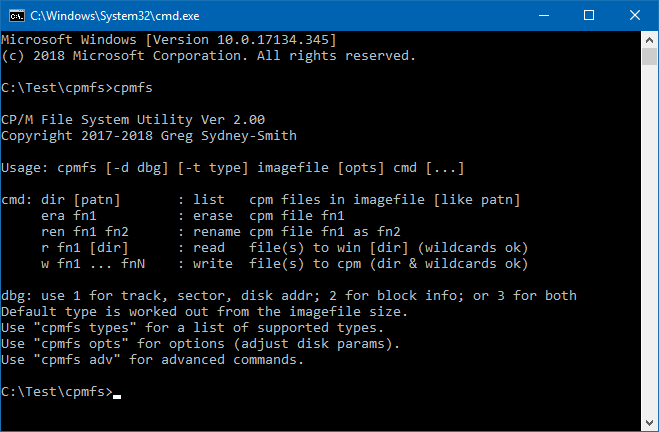

10 NOV 18 GREG LEAVE A COMMENT

Version 2.00 of cpmfs has just been released, and it’s pretty good even if I do say so myself.
Cpmfs is a tool that allows you to copy files to and from CP/M disk images. It runs on Windows (but should easily port to linux) so you can set up disks for an old Operating System from the comfort of your current one. I use it in automated builds but it’s designed to be easy to use manually too. Here’s what you can do:
–
create
CP/M, CDOS or Cromix disk images.
– copy files on and off
a CP/M or CDOS disk image.
– erase, rename or list the
files in a disk image.
– copy an operating system from a
disk image or to one.
– patch the OS already in a disk
image.
– work with CDOS disk labels.
– create a
byte for a CP/M BIOS to autoconfigure for the disk.
– work
with mixed-mode (SD track 0) disk types.
– work with
non-standard disk types (any number of tracks, any number of
sectors).
– check a CP/M (or CDOS) disk image for
errors.
– has downloadable source code.
cpmfs -t type filename initThis creates filename as a disk image file. You can then use filename with your favourite CP/M simulator. It also works for Cromemco CDOS disks so you can use filename there too. It should also work on other CP/M-like operating systems.
I use “.dsk” as the filename extension as that’s what z80sim and z80emu require, but you could use any other value if that’s better for what you use.
The internal format is just a sequence of sectors (some bytes) starting from track 0 sector 1 to how ever many tracks you have. It has no header and there is no embedded information between sectors. The format is very simple and it’s easy to implement in a simulator. That’s probably why it’s very commonly used or supported by simulators.
The lack of a header can be a nuisance – there’s lots of useful information I’d have liked to have seen tucked into a header – but it’s simplicity also serves as an inherent header. By this I mean simulators can look at the image size and determine the disk size. As an example: a disk image that is 256,256 bytes long is an image for a standard 8″ SSSD disk (77 tracks x 26 sectors x 128 bytes). If you use smaller disks (5″) the number of tracks that the drive uses is smaller so the size is smaller and a simulator can notice and change its disk parameters.
The same goes for double-sided (DS) and double-density (DD) disk images. Fortunately, every combination gives a different size.
For cpmfs 2.00, I have standardised on the disk type names that Cromemco used in the day. Their software relied on the use of those names so all of their disks were formatted to use those names. On the CP/M side of the fence, things were a lot more flexible and a lot less standardised. Cpmfs will write the disk type into the end of the boot sector, just as the Cromemco tools of the time did. This allows not just the emulator to determine the disk type; but the OS to do so too. That is particularly important for CDOS (and Cromix writing CDOS disks) but it can be useful for CP/M too as a BIOS can be written to reconfigure on disk type changes. e.g to switch to double-density and a greater capacity if a double-density disk is inserted in the (virtual) drive.
The disk types are:
Type |
Description |
LGSSSD |
Large (8″) single-sided single-density |
LGDSSD |
Large (8″) double-sided single-density |
LGSSDD |
Large (8″) single-sided double-density |
LGDSDD |
Large (8″) double-sided double-density |
SMSSSD |
Small (5″) single-sided single-density |
SMDSSD |
Small (5″) double-sided single-density |
SMSSDD |
Small (5″) single-sided double-density |
SMDSDD |
Small (5″) double-sided double-density |
They’re pretty easy to remember after you’ve used them a few times.
Notes:
1.
Large uses 77 tracks per disk (the IBM / Digital Research 8″
standard).
2. Single-density uses 128 byte sectors (the IBM /
Digital Research 8″ standard).
3. Small uses 40 tracks per
disk (common, but there wasn’t a standard).
4.
Double-density uses 512 byte sectors (standard).
Cromemco, like many manufacturers of the time, actually used “mixed-mode” disks which have a single-density track 0 and then the remaining tracks in double-density; rather than all tracks in double-density. This combination allowed older hardware, that predated double-density, to still boot a single density boot sector like it always had. They didn’t need to replace boot ROMs (and customers didn’t need to pay for an upgrade).
All of the “DD” formats mentioned above are suitable for Cromemco and similar hardware. Every one of those listed above has a single-density track 0.
In case your hardware (simulator) requires full double-density (on all tracks), I have added the following:
Type |
Description |
8FSSDD |
8″ full single-sided double-density |
8FDSDD |
8″ full double-sided double-density |
5FSSDD |
5″ full single-sided double-density |
5FDSDD |
5″ full double-sided double-density |
All of those will provide full double-density instead of a mixed-mode disk. None of them should work on CDOS; but they might if your simulator adapts and if CDOS skips reserved tracks rather than a number of sectors. They’d never work on Cromemco hardware in the real world.
CP/M will work with them provided the BIOS is set up for them. If you need them and can use them, they are there.
These 4 types and the earlier 8 make up the 12 basic floppy disk formats used by CP/M.
If you need a different number of tracks, or a different number of sectors per track, you can use the disk options included in cpmfs ver 2.00 to adjust these (see below).
cpmfs -t type filename initLook familiar? We just covered this in the heading above. If you init-ialize an existing disk image, all content will be erased and it goes back to a pristine disk, just out of the virtual box. It even smells new.
cpmfs [-ttype]filename[opts] r file [file...] [dir]cpmfs [-ttype]filename[opts] w [dir\]file [[dir\]file...]
Read one or more files from a CP/M disk image to the host file system, or write them the other way.
You can use ambiguous file names if your OS supports this. In Windows, you can use “*.com” (with the quotation marks) to read all .com files from a diskimage. The quotation marks are necessary or Windows will try to match your parameter to Windows files. Similar steps would be necessary on linux.
If you “r” one or more files and include a directory name at the end, cpmfs will put all the files it reads from the imagefile into that directory.
Here’s some examples:
C:\Test\cpmfs>mkdir 2C:\Test\cpmfs>cpmfs drivea.dsk r "d*.com" 2OK.C:\Test\cpmfs>dir 2Volume in drive C is WindowsVolume Serial Number is FCBA-5187Directory of C:\Test\cpmfs\210/11/2018 18:14 <DIR> .10/11/2018 18:14 <DIR> ..10/11/2018 18:14 9,984 DEBUG.COM10/11/2018 18:14 11,008 DISKCOPY.COM10/11/2018 18:14 3,584 DUMP.COM3 File(s) 24,576 bytes2 Dir(s) 13,555,482,624 bytes freeC:\Test\cpmfs>C:\Test\cpmfs>cpmfs -t LGSSSD new.dsk initOK.C:\Test\cpmfs>cpmfs new.dsk w 2\*.*OK.C:\Test\cpmfs>cpmfs new.dsk dirDEBUG.COMDISKCOPY.COMDUMP.COMC:\Test\cpmfs>
cpmfs [-ttype]filename[opts] rs [start[len[file]]]cpmfs [-ttype]filename[opts] ws [start[len[file]]]
This is the equivalent of the CP/M GETSYS.COM, PUTSYS.COM and/or SYSGEN.COM program.
If you don't specify a filename, sysarea.sys will be used.
If you don't specify a length, the entire system area will be used. This is based on the number of reserved tracks for the disk and it works for mixed-mode disks, as well as SD and full DD. You can "rs" from one disk type and then "ws" the file onto a different disk type. An "rs" reads all of the reserved area by default, and a "ws" only writes what's present and fits. It even respects "data disks" where the number of reserved tracks is zero (no system area).
If you'd like to patch the boot sector, or read or replace the BIOS (for example), you can use the start and len parameters. Both of these are in records. Len can span tracks, even if the number of sectors per track and density changes. Records are always 128 (80H) bytes long. The boot sector is always record 0 (so use 0 1 as start and len to read or write the boot sector). For CP/M 2.2, the CCP is 800H long, BDOS 0E00H long, and BIOS up to 380H long (on disk). In the case where the CCP, BDOS and BIOS are immediately after the boot sector; you'd use 1 16 for the CCP, 17 28 for the BDOS and 45 7 for the BIOS. Some CP/Ms load the CCP from the data area. Some CP/Ms have non-standard CCPs. If yours is non-standard, cpmfs is built so it will still work - you'll just have to adjust the start and len values to suit your needs.
The easiest way to patch a few bytes in the boot sector is to open the entire disk image directly in a hex editor. The boot sector is the first 80H bytes of the disk image.
If you need to modify the program rather than patch bytes, you are better off writing (or disassembling) the boot sector program, assembling it, and then writing the binary to the image using cpmfs ... ws 0 1 file.
Here's some examples:
C:\Test\cpmfs>cpmfs drivea.dsk rs90 records read.OK.C:\Test\cpmfs>dump sysarea.sysDUMP (Dump File) version 00.01.gssRecord 0000000: 3E 01 D3 40 38 04 97 08 16 31 1E 7F 21 00 01 01 >.S@8....1..!...000010: 0F 02 7B D3 04 CB 4B 28 15 7A D3 34 79 D3 30 97 ..{S.KK(.zS4yS0.000020: 3D 20 FD DB 34 1F 30 FB DB 30 E6 98 20 D2 78 D3 = }[4.0{[0f. RxS000030: 32 7A F6 80 D3 34 0E 33 3E 9C D3 30 DB 34 1F 38 2zv.S4.3>.S0[4.8000040: 04 ED A2 18 F7 DB 30 CB 67 28 B5 3E 04 95 3E 1A .m".w[0Kg(5>..>.000050: 9C 38 2D 3A FC 00 FE 44 20 02 CB F2 06 01 3A FA .8-:|.~D .Kr..:z000060: 00 FE 44 20 04 7B EE 02 5F 0E 5F 18 A5 00 00 00 .~D .{n._._.%...000070: 00 00 00 00 00 00 00 00 4C 47 44 53 44 44 E5 E5 ........LGDSDDee...
You
can see the disk type in bytes 120-125 of the boot sector.
C:\Test\cpmfs>z80asm -fb -sn -lboot.lis boot.z80Z80 - Assembler Release 1.7, Copyright (C) 1987-2016 by Udo MunkPass 1Read boot.z80Pass 2Read boot.z800 error(s)C:\Test\cpmfs>cpmfs drivea.dsk ws 0 1 boot.bin1 records written.OK.C:\Test\cpmfs>cpmfs drivea.dsk rs90 records read.OK.C:\Test\cpmfs>dump sysarea.sysDUMP (Dump File) version 00.01.gssRecord 0000000: 3E 01 D3 40 21 00 E4 DD 21 EE 00 DD 36 00 02 11 >.S@!.d]!n.]6...000010: 7F 31 01 0F 02 7B D3 04 CB 4B 28 15 7A D3 34 79 .1...{S.KK(.zS4y000020: D3 30 97 3D 20 FD DB 34 1F 30 FB DB 30 E6 98 20 S0.= }[4.0{[0f.000030: CF 78 D3 32 7A F6 80 D3 34 0E 33 3E 9C D3 30 DB OxS2zv.S4.3>.S0[000040: 34 1F 38 04 ED A2 18 F7 DB 30 CB 67 28 B2 DD 35 4.8.m".w[0Kg(2]5000050: 00 CA 00 FA 3A FC 00 FE 44 20 02 CB F2 06 01 3A .J.z:|.~D .Kr..:000060: FA 00 FE 44 20 04 7B EE 02 5F 0E 5F 18 A7 FF FF z.~D .{n._._.'..000070: FF FF FF FF FF FF FF FF 4C 47 44 53 53 44 E5 E5 ........LGDSSDee...
You
can see that the disk type in bytes 120-125 of the boot sector has
changed. Also whilst both sectors start with 3E 01 and D3 40 (LD A,1
then OUT (40H),A); things differ from there.
You can see what files are on a disk image by using DIR, just like in CP/M. Likewise you can ERAse and REName files as you can in CP/M. There are two versions of REN as there are two ways we're all used to using it. In Windows (or MSDOS) we do REN oldname newname. It's similar in *nix: mv oldname newname. However, in CP/M it is REN newname=oldname. Both styles are accommodated in case you type either. The glitch though, is you have to type the three parts "newname", "=" and "oldname" with a space between them.
The commands are:
cpmfs [-t type] imagefile [opts] dir [patn]cpmfs [-t type] imagefile [opts] era fncpmfs [-t type] imagefile [opts] ren old newcpmfs [-t type] imagefile [opts] ren new = old
Some examples are:
C:\Test\cpmfs>cpmfs new.dsk ren debug.com unbug.comOK.C:\Test\cpmfs>cpmfs new.dsk dirDISKCOPY.COMDUMP.COMUNBUG.COMC:\Test\cpmfs>cpmfs new.dsk ren xcopy.com=diskcopy.comError: ren new = old, orren old newC:\Test\cpmfs>cpmfs new.dsk ren xcopy.com = diskcopy.comOK.C:\Test\cpmfs>cpmfs new.dsk dirDUMP.COMUNBUG.COMXCOPY.COMC:\Test\cpmfs>cpmfs new.dsk era "d*.com"OK.C:\Test\cpmfs>cpmfs new.dsk dirUNBUG.COMXCOPY.COMC:\Test\cpmfs>cpmfs new.dsk era "*.*"OK.C:\Test\cpmfs>cpmfs new.dsk dirNo file(s) foundC:\Test\cpmfs>
Note
the use of quotes around the CP/M ambiguous file names to ensure they
make it into the cpmfs program and aren't converted to matching
Windows filenames instead.
If you're not using CDOS, this won't matter and you can skip the section.
CDOS version 2 records information about the directory in a disk label at the start of the directory. It is mostly useful information like the name of the disk and the date of the disk. It opens up the way for a really useful disk cataloging system but it was also useful for using STAT to see which disk is in which drive - without having to open the drive, pull out the disk, look and put it back in again.
However, it also records some vital information about the disk.
Single sided 8" disks, under CP/M 1 and CDOS 1, were organised as 243 blocks of 1KB each. Two of the blocks were used for the directory and this was enough space for 64 directory entries. A File Control Block (FCB) contained a map of up to 16 blocks allocated to the file. There's a little more to it than this but there is room for 16 one-byte block numbers in each FCB.
With the introduction of double-sided and/or double-density disks, the capacity went up - which was the intent. However, CP/M could only cope with up to 256 x 1KB blocks and the situation with CDOS was similar (up to 254 x 1KB blocks). Both Digital Research (that made CP/M) and Cromemco (that made CDOS) went to 2KB blocks. This only worked to a degree as a LGDSDD disk has a 1216 KB data area and that is well over 256 x 2KB blocks. Both companies went to FCBs with 8 x 2-byte block numbers for really large disks.
The main reason for a CDOS disk label is not to label the disk. It's major benefit is in providing somewhere to record the block size and whether the disk uses one-byte or two-byte block numbers in its FCBs. Without one, CDOS will assume it has a capacity of 254 KB.
If you are going to use one of the larger capacity disks in CDOS, you need to label the disk. In CDOS STAT/LBL will do that (and you'll see the disk size increase as you do it - do STAT before and after to see the size). You can also add a label using cpmfs. The command is:
cpmfs [-t type] imagefile [opts] lbl [name]
Like
CDOS, if you don't give a disk a name, the disk will be labelled
"Userdisk".
Running the above command will also store
all the correct values in all the correct places for CDOS to access
the disk properly.
You can relabel a CDOS disk. With cpmfs only the disk name changes. The date and directory information is unchanged. Under CDOS it will ask to delete any existing data and rewrite, correct or change the directory information.
A CDOS disk label appears to CP/M as a used FCB entry belonging to user 129 (which never exists). It won't show up in DIR listings. It won't get deleted (even with ERA *.*). It should be safe to use in a CP/M system (eg if you are transferring data).
If you want to remove a CDOS label (perhaps so you can create a new timestamp for the disk, or to switch it from one style of FCB to a different one), you can use the following:
cpmfs [-t type] imagefile [opts] rmlblCP/M also stores information about the disk, but in its case, this is hard-coded into the BIOS as disk parameter block (DPB) settings. If you insert a disk with different directory settings, CP/M will ruin the disk. Some BIOSes try to identify the disk type and directory settings and change their DPB settings to match. This is a similar process to what CDOS does with the disk label.
Use the DIR2 command to see if a CDOS label is present and what its settings are.
The command is:
cpmfs [-t type] imagefile [opts] dir2
It
shows you the boot sector, the CDOS label, a byte for similar
purposes for CP/M BIOSes, and a dump of every active FCB. This
doesn't include erased files.
Here's what it looks like on a disk with both a DPB byte and a CDOS label (neither get in the way of the other):
C:\Test\cpmfs>cpmfs drivea.dsk dir2Boot Sector3E 01 D3 40 38 04 97 08 16 31 1E 7F 21 00 01 01 >..@8....1..!...0F 02 7B D3 04 CB 4B 28 15 7A D3 34 79 D3 30 97 ..{...K(.z.4y.0.3D 20 FD DB 34 1F 30 FB DB 30 E6 98 20 D2 78 D3 = ..4.0..0.. .x.32 7A F6 80 D3 34 0E 33 3E 9C D3 30 DB 34 1F 38 2z...4.3>..0.4.804 ED A2 18 F7 DB 30 CB 67 28 B5 3E 04 95 3E 1A ......0.g(.>..>.9C 38 2D 3A FC 00 FE 44 20 02 CB F2 06 01 3A FA .8-:...D .....:.00 FE 44 20 04 7B EE 02 5F 0E 5F 18 A5 00 00 00 ..D .{.._._.....00 00 00 00 00 00 00 00 4C 47 44 53 44 44 E5 4A ........LGDSDD.JDPBReserved tracks: 2, Block size: 2K, Dir type: 2, Dir blocks: 4CDOS disk label: UserdiskDate on disk : 2018-11-10Cluster size : 2KDirectory type : 2 byte block numbersDirectory size : 256 entriesDirectory81 55 73 65 72 64 69 73 6B 0B 0A 76 10 80 00 40 .Userdisk..v...@00 00 01 00 02 00 03 00 00 00 00 00 00 00 00 00 ................00 43 44 4F 53 20 20 20 20 43 4F 4D 00 00 00 6F .CDOS COM...o04 00 05 00 06 00 07 00 08 00 09 00 0A 00 00 00 ................00 49 4E 49 54 32 37 31 20 43 4F 4D 00 00 00 58 .INIT271 COM...X0B 00 0C 00 0D 00 0E 00 0F 00 10 00 00 00 00 00 ................00 58 46 45 52 20 20 20 20 43 4F 4D 00 00 00 3B .XFER COM...;11 00 12 00 13 00 14 00 00 00 00 00 00 00 00 00 ................00 43 44 4F 53 47 45 4E 20 43 4F 4D 00 00 00 80 .CDOSGEN COM....15 00 16 00 17 00 18 00 19 00 1A 00 1B 00 1C 00 ................00 43 44 4F 53 47 45 4E 20 43 4F 4D 01 00 00 80 .CDOSGEN COM....1D 00 1E 00 1F 00 20 00 21 00 22 00 23 00 24 00 ...... .!.".#.$.00 43 44 4F 53 47 45 4E 20 43 4F 4D 02 00 00 04 .CDOSGEN COM....25 00 00 00 00 00 00 00 00 00 00 00 00 00 00 00 %...............00 57 52 54 53 59 53 20 20 43 4F 4D 00 00 00 09 .WRTSYS COM....26 00 00 00 00 00 00 00 00 00 00 00 00 00 00 00 &...............00 53 54 41 54 20 20 20 20 43 4F 4D 00 00 00 48 .STAT COM...H27 00 28 00 29 00 2A 00 2B 00 00 00 00 00 00 00 '.(.).*.+.......00 45 44 49 54 20 20 20 20 43 4F 4D 00 00 00 38 .EDIT COM...82C 00 2D 00 2E 00 2F 00 00 00 00 00 00 00 00 00 ,.-.../.........00 44 55 4D 50 20 20 20 20 43 4F 4D 00 00 00 1C .DUMP COM....30 00 31 00 00 00 00 00 00 00 00 00 00 00 00 00 0.1.............00 49 4E 49 54 32 38 32 20 43 4F 4D 00 00 00 5E .INIT282 COM...^32 00 33 00 34 00 35 00 36 00 37 00 00 00 00 00 2.3.4.5.6.7.....00 44 49 53 4B 43 4F 50 59 43 4F 4D 00 00 00 56 .DISKCOPYCOM...V38 00 39 00 3A 00 3B 00 3C 00 3D 00 00 00 00 00 8.9.:.;.<.=.....00 53 43 52 45 45 4E 20 20 43 4F 4D 00 00 00 57 .SCREEN COM...W3E 00 3F 00 40 00 41 00 42 00 43 00 00 00 00 00 >.?.@.A.B.C.....00 44 45 42 55 47 20 20 20 43 4F 4D 00 00 00 4E .DEBUG COM...N44 00 45 00 46 00 47 00 48 00 00 00 00 00 00 00 D.E.F.G.H.......00 4D 45 4D 54 53 54 38 20 43 4F 4D 00 00 00 1A .MEMTST8 COM....4B 00 4C 00 00 00 00 00 00 00 00 00 00 00 00 00 K.L.............00 4D 45 4D 54 53 54 43 20 43 4F 4D 00 00 00 1A .MEMTSTC COM....4D 00 4E 00 00 00 00 00 00 00 00 00 00 00 00 00 M.N.............00 58 20 20 20 20 20 20 20 43 4F 4D 00 00 00 03 .X COM....49 00 00 00 00 00 00 00 00 00 00 00 00 00 00 00 I...............00 52 20 20 20 20 20 20 20 43 4F 4D 00 00 00 20 .R COM...4A 00 4F 00 00 00 00 00 00 00 00 00 00 00 00 00 J.O.............00 57 20 20 20 20 20 20 20 43 4F 4D 00 00 00 20 .W COM...50 00 51 00 00 00 00 00 00 00 00 00 00 00 00 00 P.Q.............00 49 4E 49 54 30 30 30 34 43 4F 4D 00 00 00 08 .INIT0004COM....52 00 00 00 00 00 00 00 00 00 00 00 00 00 00 00 R...............C:\Test\cpmfs>
drivea.dsk
is the original version before we replaced the boot sector. I
replaced an existing CDOS disk label and added the DPB byte. I'll
cover that next.
You can see the details saved in the DPB byte, those in CDOS disk label and the active content of the disk directory. You can plainly see the two byte block numbers in the second half of each FCB (eg INIT271 COM: 0B 00, 0C 00, 0D 00, 0E 00, 0F 00, 10 00). You can also see the CDOS disk label entry at the start (always at the start if there is one).
The DPB byte is the last byte in the boot sector. This is a CP/M equivalent of key parts of the CDOS disk label and it is discussed in more detail in the next section.
There are 12 basic disk types (mentioned and listed above). But, there are choices about how you use those disk types. Some people create "data disks". These have an empty system area (reserved tracks = 0) so the data area and directory start at track 0 (the start of the disk image file). When Cromemco and Digital Research both went to 256 x 2KB blocks, they implemented them independently (by the look of it) and certainly differently. Copying files by (virtual) disk from a (virtual) CDOS computer to a (virtual) CP/M computer doesn't always work (but does sometimes). I'll cover that in a separate article after this one but, in short, the FCBs are slightly different.
For cpmfs I wanted a mechanism where I could store the specific choices that affect the data area: how many reserved tracks, the block size, the FCB type and how many blocks are used by the directory. This would allow those settings to travel with the disk so, if cpmfs sees the disk again later, it knows the right values to use. For you, the user, you can simply use cpmfs to update such a disk without having to tack a series of options on the command line. The intent, with the disk type and the DPB byte at the end of the boot sector, is for you to be able to just use the imagefile name without a [-t type] and without any [opts].
If your disks match the 12 types above and if you use one of the more common data area arrangements, the DPB byte should achieve that intent.
The first bits (most significant) is a zero.
The next three bits are the number of directory blocks. Normal values for this, for a floppy disk, are 1-4. Zero directory blocks gives an unusable disk. 4 x 2K blocks is 256 directory entries, which seems a reasonable maximum for a floppy disk.
The next two bits encode the FCB type. The four values are: 0= 1K blocks, one-byte block numbers; 1= 2K blocks, one-byte block numbers, CP/M 2K1 FCB; 2= 2K blocks, two-byte block numbers; or 3= 2K blocks, one-byte block numbers, CDOS 2K1 FCB. 0, 1 and 2 are CP/M formats. 3 is a CDOS-only format. CDOS will work with 0, 2 or 3. Anything other than 0 requires a CDOS label if it is to be used by CDOS. You can't create a CDOS label if the FCB type is 1 (as that is CP/M-only).
The last two bits (least significant) are the number of reserved tracks. This defines the size of the system area and the start of the data area. It can be any reasonable value (0-3 tracks). The size of the system area was set in CP/M 1 as 2 tracks for an 8" (SSSD) disk. That was 2 x 26 sectors x 128 bytes. In order to fit the same amount of operating system on 5" disks, the rule became 3 tracks (x 18 sectors x 128 bytes). CP/M 2 was backward compatible with CP/M 1 disks so it had to fit into the same (8") two tracks. Double-density shook things up a bit but if track 0 remained SD you always needed at least a second track. Data disks have 0 system tracks so the most common values used are: 0 (data), 2 (8") or 3 (5"). A full DD 8" disk has the equivalent of 64 x 128 bytes on a single track and the entire CP/M OS would fit in that one track. 0-3 should work for all real world cases.
If the DPB byte is present at the end of the boot sector, and if it is preceded by an E5 byte, and if it is in the range described above (10H-4FH); then cpmfs will use it to set the number of reserved tracks, the number of directory blocks, the block size and the directory (FCB) type.
You can change any of the DPB related values by using the [opts] parameter.
You can re/write the new settings to the DPB byte by using the command:
cpmfs [-d dbg] [-t type] imagefile [opts] dpb
Here's
a few examples:
C:\Test\cpmfs>cpmfs -t LGDSDD new.dsk initOK.C:\Test\cpmfs>cpmfs new.dsk dir2Boot SectorE5 E5 E5 E5 E5 E5 E5 E5 E5 E5 E5 E5 E5 E5 E5 E5 ................E5 E5 E5 E5 E5 E5 E5 E5 E5 E5 E5 E5 E5 E5 E5 E5 ................E5 E5 E5 E5 E5 E5 E5 E5 E5 E5 E5 E5 E5 E5 E5 E5 ................E5 E5 E5 E5 E5 E5 E5 E5 E5 E5 E5 E5 E5 E5 E5 E5 ................E5 E5 E5 E5 E5 E5 E5 E5 E5 E5 E5 E5 E5 E5 E5 E5 ................E5 E5 E5 E5 E5 E5 E5 E5 E5 E5 E5 E5 E5 E5 E5 E5 ................E5 E5 E5 E5 E5 E5 E5 E5 E5 E5 E5 E5 E5 E5 E5 E5 ................E5 E5 E5 E5 E5 E5 E5 E5 4C 47 44 53 44 44 E5 E5 ........LGDSDD..DirectoryC:\Test\cpmfs>cpmfs new.dsk dpbOK.C:\Test\cpmfs>cpmfs new.dsk dir2Boot SectorE5 E5 E5 E5 E5 E5 E5 E5 E5 E5 E5 E5 E5 E5 E5 E5 ................E5 E5 E5 E5 E5 E5 E5 E5 E5 E5 E5 E5 E5 E5 E5 E5 ................E5 E5 E5 E5 E5 E5 E5 E5 E5 E5 E5 E5 E5 E5 E5 E5 ................E5 E5 E5 E5 E5 E5 E5 E5 E5 E5 E5 E5 E5 E5 E5 E5 ................E5 E5 E5 E5 E5 E5 E5 E5 E5 E5 E5 E5 E5 E5 E5 E5 ................E5 E5 E5 E5 E5 E5 E5 E5 E5 E5 E5 E5 E5 E5 E5 E5 ................E5 E5 E5 E5 E5 E5 E5 E5 E5 E5 E5 E5 E5 E5 E5 E5 ................E5 E5 E5 E5 E5 E5 E5 E5 4C 47 44 53 44 44 E5 4A ........LGDSDD.JDPBReserved tracks: 2, Block size: 2K, Dir type: 2, Dir blocks: 4DirectoryC:\Test\cpmfs>cpmfs new.dsk -bs 1 -dt 1 -ds 2 dpbOK.C:\Test\cpmfs>cpmfs new.dsk dir2Boot SectorE5 E5 E5 E5 E5 E5 E5 E5 E5 E5 E5 E5 E5 E5 E5 E5 ................E5 E5 E5 E5 E5 E5 E5 E5 E5 E5 E5 E5 E5 E5 E5 E5 ................E5 E5 E5 E5 E5 E5 E5 E5 E5 E5 E5 E5 E5 E5 E5 E5 ................E5 E5 E5 E5 E5 E5 E5 E5 E5 E5 E5 E5 E5 E5 E5 E5 ................E5 E5 E5 E5 E5 E5 E5 E5 E5 E5 E5 E5 E5 E5 E5 E5 ................E5 E5 E5 E5 E5 E5 E5 E5 E5 E5 E5 E5 E5 E5 E5 E5 ................E5 E5 E5 E5 E5 E5 E5 E5 E5 E5 E5 E5 E5 E5 E5 E5 ................E5 E5 E5 E5 E5 E5 E5 E5 4C 47 44 53 44 44 E5 22 ........LGDSDD."DPBReserved tracks: 2, Block size: 1K, Dir type: 1, Dir blocks: 2DirectoryC:\Test\cpmfs>cpmfs new.dsk -bs 2 -dt 1 -ds 2 dpbOK.C:\Test\cpmfs>cpmfs new.dsk dir2Boot SectorE5 E5 E5 E5 E5 E5 E5 E5 E5 E5 E5 E5 E5 E5 E5 E5 ................E5 E5 E5 E5 E5 E5 E5 E5 E5 E5 E5 E5 E5 E5 E5 E5 ................E5 E5 E5 E5 E5 E5 E5 E5 E5 E5 E5 E5 E5 E5 E5 E5 ................E5 E5 E5 E5 E5 E5 E5 E5 E5 E5 E5 E5 E5 E5 E5 E5 ................E5 E5 E5 E5 E5 E5 E5 E5 E5 E5 E5 E5 E5 E5 E5 E5 ................E5 E5 E5 E5 E5 E5 E5 E5 E5 E5 E5 E5 E5 E5 E5 E5 ................E5 E5 E5 E5 E5 E5 E5 E5 E5 E5 E5 E5 E5 E5 E5 E5 ................E5 E5 E5 E5 E5 E5 E5 E5 4C 47 44 53 44 44 E5 26 ........LGDSDD.&DPBReserved tracks: 2, Block size: 2K, Dir type: 1, Dir blocks: 2DirectoryC:\Test\cpmfs>cpmfs new.dsk -bs 2 -dt 2 -ds 2 dpbOK.C:\Test\cpmfs>cpmfs new.dsk dir2Boot SectorE5 E5 E5 E5 E5 E5 E5 E5 E5 E5 E5 E5 E5 E5 E5 E5 ................E5 E5 E5 E5 E5 E5 E5 E5 E5 E5 E5 E5 E5 E5 E5 E5 ................E5 E5 E5 E5 E5 E5 E5 E5 E5 E5 E5 E5 E5 E5 E5 E5 ................E5 E5 E5 E5 E5 E5 E5 E5 E5 E5 E5 E5 E5 E5 E5 E5 ................E5 E5 E5 E5 E5 E5 E5 E5 E5 E5 E5 E5 E5 E5 E5 E5 ................E5 E5 E5 E5 E5 E5 E5 E5 E5 E5 E5 E5 E5 E5 E5 E5 ................E5 E5 E5 E5 E5 E5 E5 E5 E5 E5 E5 E5 E5 E5 E5 E5 ................E5 E5 E5 E5 E5 E5 E5 E5 4C 47 44 53 44 44 E5 2A ........LGDSDD.*DPBReserved tracks: 2, Block size: 2K, Dir type: 2, Dir blocks: 2DirectoryC:\Test\cpmfs>cpmfs new.dsk -bs 2 -dt 3 -ds 2 dpbOK.C:\Test\cpmfs>cpmfs new.dsk dir2Boot SectorE5 E5 E5 E5 E5 E5 E5 E5 E5 E5 E5 E5 E5 E5 E5 E5 ................E5 E5 E5 E5 E5 E5 E5 E5 E5 E5 E5 E5 E5 E5 E5 E5 ................E5 E5 E5 E5 E5 E5 E5 E5 E5 E5 E5 E5 E5 E5 E5 E5 ................E5 E5 E5 E5 E5 E5 E5 E5 E5 E5 E5 E5 E5 E5 E5 E5 ................E5 E5 E5 E5 E5 E5 E5 E5 E5 E5 E5 E5 E5 E5 E5 E5 ................E5 E5 E5 E5 E5 E5 E5 E5 E5 E5 E5 E5 E5 E5 E5 E5 ................E5 E5 E5 E5 E5 E5 E5 E5 E5 E5 E5 E5 E5 E5 E5 E5 ................E5 E5 E5 E5 E5 E5 E5 E5 4C 47 44 53 44 44 E5 2E ........LGDSDD..DPBReserved tracks: 2, Block size: 2K, Dir type: 3, Dir blocks: 2DirectoryC:\Test\cpmfs>cpmfs new.dsk -rsvd 3 -bs 2 -dt 2 -ds 2 dpbOK.C:\Test\cpmfs>cpmfs new.dsk dir2Boot SectorE5 E5 E5 E5 E5 E5 E5 E5 E5 E5 E5 E5 E5 E5 E5 E5 ................E5 E5 E5 E5 E5 E5 E5 E5 E5 E5 E5 E5 E5 E5 E5 E5 ................E5 E5 E5 E5 E5 E5 E5 E5 E5 E5 E5 E5 E5 E5 E5 E5 ................E5 E5 E5 E5 E5 E5 E5 E5 E5 E5 E5 E5 E5 E5 E5 E5 ................E5 E5 E5 E5 E5 E5 E5 E5 E5 E5 E5 E5 E5 E5 E5 E5 ................E5 E5 E5 E5 E5 E5 E5 E5 E5 E5 E5 E5 E5 E5 E5 E5 ................E5 E5 E5 E5 E5 E5 E5 E5 E5 E5 E5 E5 E5 E5 E5 E5 ................E5 E5 E5 E5 E5 E5 E5 E5 4C 47 44 53 44 44 E5 2B ........LGDSDD.+DPBReserved tracks: 3, Block size: 2K, Dir type: 2, Dir blocks: 2DirectoryC:\Test\cpmfs>
Each
single disk type can have any of the 64 possible choices of directory
settings. It is hardly surprising that we didn't end up with a
workable standard for disk transfers beyond the original 8" SSSD
one (with 1K blocks, single-byte block numbers, 64 directory entries
and 2 reserved tracks).
In many ways, the DPB byte, in the last byte in the boot sector, is a CP/M equivalent of key parts of the CDOS disk label. The byte is used by cpmfs and could be used by a CP/M BIOS to automatically configure its internal DPB settings to match those of the disk currently in the drive.
To remove the DPB byte use:
cpmfs [-d dbg] [-t type] imagefile [opts] rmdpbIf your disk isn't one of the 12 standard ones you can use:
cpmfs [-d dbg] [-t type] imagefile [opts] cmd ...opts are one or more of:-tks num : disk size in tracks-spt num : sectors per track-siz bytes : sector size in bytes (eg 128 or 512)-rsvd tracks : system area in tracks-sk num : skew factor-bs num : block size in KB (1/2/4)-ds blocks : dir size in blocks (1-8)-dt num : directory type 1, 2 or 3(CDOS 2K 1byte)-spt0 num : as above, for track 0-siz0 bytes : as above, for track 0
-tks,
-spt, -siz, -spt0 and -siz0 are related to adjusting the disk
geometry.
-rsvd, -bs, -ds and -dt relate to the directory
settings (see DPB heading above).
-sk is the skew factor used by CP/M (and CDOS) disks. The idea is to NOT read sectors sequentially so you have time to process the sector you just read, before the next one you need moves under the disk head. A skew factor of 0 or 1 is read the next sector. A skew factor of 2 gets every second sector. A skew factor of 3 gives every third. You'll see the simulated computer read sectors 1, 3, 5, 9, etc; or 1, 4, 7, 10, etc. Again, every manufacturer is different. Again, CP/M allows you to pick any value so an image from a real machine of the era could have any value. I have used values that CDOS uses as these will have been optimised for reasonably typical and widely used hardware. If files have fragments from other files in them, or if the order seems to jump around within files; and if the directory settings are right, adjust the skew factor.
If you look into the disk image with a hex viewer, you may be able to spot the skew factor the image is actually using. If the disk is single density and the first chunk of a file is 80H at 3400H and the next chunk is 300H after that, the skew factor is probably 6 (300H/80H). For double-density, the sectors are 200H long so you're interested in how many 200Hs are skipped before the next part of the file is found. I hope this helps.
With the "-sk" option, cpmfs can use any skew factor and you can create disk images with different skew factors and copy files between them.
The skew factor isn't part of a CP/M disk parameter block. It is handled externally. I haven't been able to fit skew factor into my DPB byte that can get written to the boot sector so "-sk" settings have to be remembered and used every time. This makes having the right default important. If you need to change the default, perhaps by adding a special disk type, you can modify and recompile the cpmfs program. The source code is freely available.
The available disk types are:
C:\Test\cpmfs>cpmfs typesCP/M File System Utility Ver 2.00Copyright 2017-2018 Greg Sydney-SmithSupported imagefile types are:Type : Description---------------------------------------------------------------LGSSSD : 77Tk 26sec128 skew06 1K 64Dir1LGDSSD : 154Tk 26sec128 skew06 2K 128Dir1LGSSDD : 77Tk 16sec512 skew11 2K 128Dir2 (Tk0 26sec128)LGDSDD : 154Tk 16sec512 skew11 2K 256Dir2 (Tk0 26sec128)SMSSSD : 40Tk 18sec128 skew05 1K 64Dir1SMDSSD : 80Tk 18sec128 skew05 1K 64Dir1SMSSDD : 40Tk 10sec512 skew04 1K 64Dir1 (Tk0 18sec128)SMDSDD : 80Tk 10sec512 skew04 2K 128Dir1 (Tk0 18sec128)CLSSSD : 77Tk 26sec128 skew06 0K CromixCLDSSD : 154Tk 26sec128 skew06 0K CromixCLSSDD : 77Tk 16sec512 skew11 0K Cromix (Tk0 26sec128)CLDSDD : 154Tk 16sec512 skew11 0K Cromix (Tk0 26sec128)CSSSSD : 40Tk 18sec128 skew05 0K CromixCSDSSD : 80Tk 18sec128 skew05 0K CromixCSSSDD : 40Tk 10sec512 skew04 0K Cromix (Tk0 18sec128)CSDSDD : 80Tk 10sec512 skew04 0K Cromix (Tk0 18sec128)8_SSSD : 77Tk 26sec128 skew06 1K 64Dir18_DSSD : 154Tk 26sec128 skew06 2K 128Dir28_SSDD : 77Tk 16sec512 skew11 2K 128Dir2 (Tk0 26sec128)8_DSDD : 154Tk 16sec512 skew11 2K 256Dir2 (Tk0 26sec128)5_SSSD : 40Tk 18sec128 skew05 1K 64Dir15_DSSD : 80Tk 18sec128 skew05 1K 64Dir15_SSDD : 40Tk 10sec512 skew04 1K 64Dir1 (Tk0 18sec128)5_DSDD : 80Tk 10sec512 skew04 2K 128Dir2 (Tk0 18sec128)8FSSDD : 77Tk 16sec512 skew11 2K 128Dir28FDSDD : 154Tk 16sec512 skew11 2K 128Dir25FSSDD : 40Tk 10sec512 skew04 2K 128Dir25FDSDD : 80Tk 10sec512 skew04 2K 128Dir2UM4 : 255Tk 128sec128 skew00 2K 256Dir2Use "cpmfs -t (type) info" for more detail.C:\Test\cpmfs>
You
can see 8 of the standard 12 at the top of the list.
After that is the same 8 but with a Cromix ID in the boot sector. You can't read or write files from or to Cromix disks with a CP/M File System program (such as cpmfs) because the Cromix file system is very different. However, you can use cpmfs to create disks that can be used by Cromix. You just use a Cromix type with "cpmfs -t type diskimage init". There is something very nice about being in Cromix and being able to mount more disk space.
After the Cromix types are the same basic 8 again, but these have purely CP/M FCB Directory settings. Most are identical to the earlier ones. The exceptions are the largest SMall disk and, aside from SSSD which is common to CP/M and CDOS, the smallest LarGe disk. Those (SMDSDD and LGDSSD) are the only two disk types that the different choices by Cromemco and Digital Research affect. Both are 2K blocks and one-byte block numbers but the FCBs used are slightly different. If you're only using CP/M and never CDOS, you may just opt to use the "8_" and "5_" disk types instead of the "LG" and "SM" ones and never have to remember the differences.
For me, I just use the Cromemco type names and "-dt 1" if I want to make it a CP/M one-byte FCB or "-dt 2" to make any of them use the compatible two-byte FCB.
The next 4 disk types listed are the remaining of the 12 basic types. None of these should work in a real CDOS system so all of them use CP/M FCB styles.
The last one is for a disk I found in Udo's collection. He'd created a very large format for use in z80sim. It'd never work in the real world as a real world floppy (who can fold a 10" or 15" disk to fit inside an 8" drive?); but it's very useful in modern times with emulators. For my convenience mainly, I just tacked that on to the end of the list. If you have other disk types like that, you can do the same and recompile cpmfs to include them.
The startup code in cpmfs looks at the first 128 bytes of the disk image for a known disk type (one of the up-to-6-byte strings listed above: LGSSSD, ...) and, if the image is the right size for that type, it uses that type. The size check is to guard against disks that were SYSGENned from a different type without the boot sector having been corrected (see Is CP/M SYSGEN safe?).
If the boot sector doesn't have a recognised disk type name in bytes 120-125, it picks the first one in the list that has the right size. If you want it pick something else, just use "-t type" with one of the other disk type names.
If you want to see more detail about one of the disk types you can do something like:
C:\Test\cpmfs>cpmfs -t SMDSDD infoName : SMDSDDDescription : 80Tk 10sec512 skew04 2K 128Dir1 (Tk0 18sec128)Image size : 3178 records (406784 bytes)System area size : 58 recordsData area size : 3120 records (390K)Block size : 16 records (2K)Dir size : 32 records (128 entries, 2 blocks)Dir type : 3 (CDOS 8x 1 byte block numbers)Tracks : 80Reserved tracks : 2Track 0 : 18 sectors x 128 bytesTrack 1... : 10 sectors x 512 bytesSkew factor : 4Skew table : 1, 5, 9, 3, 7, 2, 6,10, 4, 8C:\Test\cpmfs>
Here
you can see that it has 2K blocks, a CDOS-only directory type and a
skew factor of 4; amongst other things.
You can also use "info" with just a disk image name to see what cpmfs will use for that image. An example of that is:
C:\Test\cpmfs>cpmfs drivea.dsk infoName : LGDSDDDescription : 154Tk 16sec512 skew11 2K 256Dir2 (Tk0 26sec128)Image size : 9818 records (1256704 bytes)System area size : 90 recordsData area size : 9728 records (1216K)Block size : 16 records (2K)Dir size : 64 records (256 entries, 4 blocks)Dir type : 2 (2 byte block numbers)Tracks : 154Reserved tracks : 2Track 0 : 26 sectors x 128 bytesTrack 1... : 16 sectors x 512 bytesSkew factor : 11Skew table : 1,12, 7, 2,13, 8, 3,14, 9, 4,15,10, 5,16,11, 6C:\Test\cpmfs>
If
the image has a DPB byte and if you include any of the "[opts]",
they will be included in the info display.
C:\Test\cpmfs>cpmfs drivea.dsk usedBlocks in use:XXXX11111111111111111111111111111111111111111111111111111111111111111111111111111110000000000000000000000000000000000000000000000000000000000000...000000000000000083 of 608 blocks usedOK.C:\Test\cpmfs>
You
can see how much space has been used and easily determine how much is
left. Allocated blocks show as "1". Unallocated, as "0".
Cross linked ones show as "X".
The CDOS disk label assigns directory blocks to the FCB for the label. If you have a CDOS label on the disk, the directory blocks at the start will show up as being cross-linked (in this case in the directory and in a "file").
If you see an "X" other than at the start then you have a problem with the disk. Use "DIR2" to look at the directory in more detail and see which files are cross-linked. The CDOS version of STAT will also list any cross-linked files; provided the disk image isn't a CP/M-only FCB type. The CP/M 2.2 STAT doesn't include the same feature.
The
windows executable is available from the cpmfs product page
(cpmfs).
The
source code and build file are in cpm/cpmfs/cpmfs-2.00.zip.